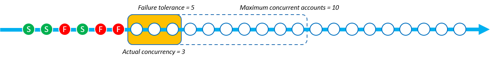

Parâmetro Modo de Simultaneidade
O Modo de Simultaneidade é um parâmetro para StackSetOperationPreferences que permite que você escolha como o nível de simultaneidade se comporta durante as operações de conjunto de pilhas. Você pode escolher entre os seguintes modos:
-
Alta tolerância a falhas: essa opção reduz dinamicamente o nível de simultaneidade para garantir que o número de contas com falha nunca exceda o valor de Tolerância a falhas +1. A simultaneidade real inicial é definida como o menor valor do Máximo de contas simultâneas ou o valor de Tolerância a falhas +1. A simultaneidade real é então reduzida proporcionalmente pelo número de falhas. Esse é o comportamento padrão.
-
Tolerância moderada a falhas: essa opção desacopla a Tolerância a falhas da simultaneidade real. Isso permite que as operações de conjunto de pilhas sejam executadas no nível de simultaneidade definido pelo valor Máximo de contas simultâneas, independentemente do número de falhas.
A Alta tolerância a falhas reduz a velocidade de implantação à medida que ocorrem falhas na operação do conjunto de pilhas porque a simultaneidade diminui para cada falha. A Tolerância moderada a falhas prioriza a velocidade de implantação e, ao mesmo tempo, aproveita os recursos de segurança do AWS CloudFormation. Isso permite que você analise e resolva falhas de operação do conjunto de pilhas relacionadas a problemas comuns, como as relacionadas a recursos, cotas de serviço e permissões existentes.
Para obter mais informações sobre falhas na operação de pilha do StackSets, consulte Motivos comuns de falha na operação da pilha.
Para obter mais informações sobre o Máximo de contas simultâneas e a Tolerância a falhas, consulte Opções de operação do conjunto de pilhas.
Como cada Modo de Simultaneidade funciona
As imagens abaixo fornecem uma representação visual de como cada Modo de Simultaneidade funciona durante uma operação de conjunto de pilhas. A sequência de nós representa uma implantação em uma única Região da AWS e cada nó é uma Conta da AWS de destino.
- Alta tolerância a falhas
-
Quando uma operação de conjunto de pilhas usando a Alta tolerância a falhas tem o valor de Tolerância a falhas definido como 5 e o valor do Máximo de contas simultâneas definido como 10, a simultaneidade real é 6. A simultaneidade real é 6 porque o valor de Tolerância a falhas de 5 +1 é menor do que o valor do Máximo de contas simultâneas.
A seguinte imagem mostra o impacto que o valor da Tolerância a falhas tem no valor Máximo de contas simultâneas, e o impacto que ambos têm na simultaneidade real da operação do conjunto de pilhas:

Quando a implantação começa e há instâncias de pilha com falha, a simultaneidade real é reduzida para fornecer uma experiência de implantação segura. A simultaneidade real é reduzida de 6 para 5 quando o StackSets falha ao implantar uma instância de pilha.


O modo Alta tolerância a falhas reduz a simultaneidade real proporcionalmente ao número de instâncias de pilha com falha. No exemplo a seguir, a simultaneidade real é reduzida de 5 para 3 quando o StackSets falha ao implantar mais duas instâncias de pilha, elevando o total de instâncias de pilha com falha para três.
O StackSets falha na operação de conjunto de pilhas quando o número de instâncias de pilha com falha é igual ao valor definido de Tolerância a falhas +1. No exemplo a seguir, o StackSets falha na operação quando há seis instâncias de pilha com falha e o valor de Tolerância a falhas é 5.

Neste exemplo, o StackSets implantou nove instâncias de pilha (três com êxito e seis com falha) antes de interromper a operação do conjunto de pilhas.
- Tolerância moderada a falhas
-
Quando uma operação de conjunto de pilhas usando a Tolerância moderada a falhas tem o valor de Tolerância a falhas definido como 5 e o valor do Máximo de contas simultâneas definido como 10, a simultaneidade real é 10.

Quando a implantação começa e há instâncias de pilha com falha, a simultaneidade real não muda. No exemplo a seguir, uma operação de pilha falhou, mas a simultaneidade real permanece em 10.

A simultaneidade real permanece em 10, mesmo após mais duas falhas na instância de pilha.

O StackSets falha na operação de conjunto de pilhas quando o número de instâncias de pilha com falha excede o valor de Tolerância a falhas. No exemplo a seguir, o StackSets falha na operação quando há seis instâncias de pilha com falha e a contagem de Tolerância a falhas é 5. No entanto, a operação não terminará até que as operações restantes na fila de simultaneidade terminem.

O StackSets continua a implantar instâncias de pilha que já estão na fila de simultaneidade. Isso significa que o número de instâncias de pilha com falha pode ser maior do que a Tolerância a falhas. No exemplo a seguir, há oito instâncias de pilha com falha porque a fila de simultaneidade ainda tinha sete operações a serem executadas, embora a operação do conjunto de pilhas tivesse atingido a Tolerância a falhas de 5.
![Esta é uma operação de pilha com Tolerância moderada a falhas. A Tolerância a falhas é definida como 5 e o Máximo de contas simultâneas é definido como 10. O total de oito operações de pilha falhou e a simultaneidade real permaneceu em 10. Um total de oito instâncias de pilha falhou porque a fila de simultaneidade ainda tinha sete operações a serem executadas, mesmo depois de exceder o limite de tolerância a falhas de 5. Depois que o limite de tolerância a falhas foi atingido e as operações na fila de simultaneidade terminaram, a operação do conjunto de pilhas falhou.](images/concurrency-soft-failure-tolerance-5.png)
Neste exemplo, o StackSets implantou 15 instâncias de pilha (sete com êxito e oito com falha) antes de interromper a operação da pilha.
Escolha entre Alta tolerância a falhas e Tolerância moderada a falhas com base na velocidade de implantação
Escolher entre Alta tolerância a falhas e Tolerância moderada a falhas depende da velocidade de preferência da implantação do conjunto de pilhas e do número permitido de falhas de implantação.
As tabelas a seguir mostram como cada modo de simultaneidade lida com uma operação de conjunto de pilhas que falha ao tentar implantar um total de mil instâncias de pilha. Em cada cenário, o valor de Tolerância a falhas é definido como 100 instâncias de pilha e o valor Máximo de contas simultâneas é definido como 250 instâncias de pilha.
Embora o StackSets realmente coloque as contas em fila como uma janela deslizante (consulte Como cada Modo de Simultaneidade funciona), este exemplo mostra a operação em lotes para demonstrar a velocidade de cada modo.
Alta tolerância a falhas
Este exemplo usando o modo de Alta tolerância a falhas reduz a simultaneidade real em relação ao número de falhas que ocorrem em cada lote anterior. Cada lote tem 20 instâncias com falha, o que reduz a simultaneidade real do lote seguinte em 20 até que a operação do conjunto de pilhas atinja o valor de Tolerância a falhas de 100.
Na tabela a seguir, a simultaneidade real inicial do primeiro lote é de 101 instâncias de pilha. A simultaneidade real é 101 porque é o valor mais baixo do Máximo de contas simultâneas (250) e da Tolerância a falhas (100) +1. Cada lote contém 20 implantações de instâncias de pilha com falha, o que reduz a simultaneidade real de cada lote seguinte em 20 instâncias de pilha.
| Alta tolerância a falhas | Lote 1 | Lote 2 | Lote 3 | Lote 4 | Lote 5 | Lote 6 |
|---|---|---|---|---|---|---|
| Contagem real de simultaneidade | 101 | 81 | 61 | 41 | 21 | - |
| Contagem de instâncias com falha | 20 | 20 | 20 | 20 | 20 | - |
| Contagem de instâncias de pilha com êxito | 81 | 61 | 41 | 21 | 1 | - |
A operação usando a Alta tolerância a falhas concluiu 305 implantações de instâncias de pilha em cinco lotes no momento em que a operação de conjunto de pilhas atingiu a Tolerância a falhas de cem instâncias de pilha. A operação do conjunto de pilhas implanta com êxito 205 instâncias de pilha antes de falhar.
Tolerância moderada a falhas
Este exemplo usando o modo de Tolerância moderada a falhas mantém a mesma contagem real de simultaneidade definida pelo valor Máximo de contas simultâneas de 250 instâncias de pilha, independentemente do número de instâncias com falha. As operações do conjunto de pilhas mantêm a mesma simultaneidade real até atingir o valor de Tolerância a falhas de cem instâncias.
Na tabela a seguir, a simultaneidade real inicial do primeiro lote é de 250 instâncias de pilha. A simultaneidade real é 250 porque o valor do Máximo de contas simultâneas está definido como 250 e o modo Tolerância moderada a falhas permite que o StackSets use esse valor como a simultaneidade real, independentemente do número de falhas. Embora haja 50 falhas em cada um dos lotes neste exemplo, a simultaneidade real permanece inalterada.
| Tolerância moderada a falhas | Lote 1 | Lote 2 | Lote 3 | Lote 4 | Lote 5 | Lote 6 |
|---|---|---|---|---|---|---|
| Contagem real de simultaneidade | 250 | 250 | - | - | - | - |
| Contagem de instâncias com falha | 50 | 50 | - | - | - | - |
| Contagem de instâncias de pilha com êxito | 200 | 200 | - | - | - | - |
Usando o mesmo valor de Máximo de contas simultâneas e Tolerância a falhas, a operação usando o modo Tolerância moderada a falhas concluiu 500 implantações de instâncias de pilha em dois lotes. A operação do conjunto de pilhas implanta com êxito 400 instâncias de pilha antes de falhar.
Escolher seu Modo de Simultaneidade usando o AWS Management Console
Você pode escolher o Modo de Simultaneidade para conjuntos de pilhas novos ou existentes na página Definir opções de implantação.

Para obter mais informações sobre a criação de novos conjuntos de pilhas usando o AWS Management Console, consulte Criar um conjunto de pilhas.
Para obter mais informações sobre a atualização de conjuntos de pilhas existentes usando o AWS Management Console, consulte Atualizar o conjunto de pilhas usando o console do AWS CloudFormation.
Para obter mais informações sobre a exclusão de conjuntos de pilhas usando o AWS Management Console, consulte Excluir um conjunto de pilhas usando o AWS Management Console.
Escolher seu Modo de Simultaneidade usando o AWS Command Line Interface
Você pode usar o parâmetro ConcurrencyMode com os seguintes comandos do StackSets:
Esses comandos têm um parâmetro existente chamado --operation-preferences que pode usar a configuração ConcurrencyMode. O ConcurrencyMode pode ser definido com um dos seguintes valores:
-
STRICT_FAILURE_TOLERANCE -
SOFT_FAILURE_TOLERANCE
O seguinte exemplo cria uma instância de pilha usando o ConcurrencyMode STRICT_FAILURE_TOLERANCE, com uma FailureToleranceCount definida como 10 e uma MaxConcurrentCount definida como 5:
aws cloudformation create-stack-instances \ --stack-set-nameexample-stackset\ --accounts123456789012\ --regionseu-west-1\ --operation-preferences ConcurrencyMode=STRICT_FAILURE_TOLERANCE,FailureToleranceCount=10,MaxConcurrentCount=5
Para obter mais informações sobre a criação de novos conjuntos de pilhas usando a AWS Command Line Interface (CLI), consulte Criar um conjunto de pilhas.
Para obter mais informações sobre a atualização de conjuntos de pilhas existentes usando o AWS CLI, consulte Atualizar o conjunto de pilhas usando a AWS CLI.
Para obter mais informações sobre a exclusão de conjuntos de pilhas usando o AWS CLI, consulte Excluir um conjunto de pilhas usando o AWS CLI.